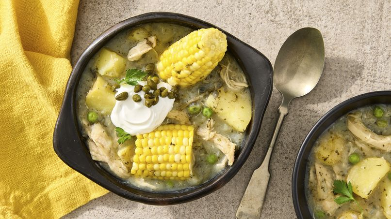

Ajiaco
Back to Recipes

Descripcion
El ajiaco es una sopa típica de la región andina de Colombia, especialmente de Bogotá.
Se elabora con:
- Pollo
- Papas (tres tipos)
- Papa criolla
- Papa sabanera
- Papa pastusa
- Maíz en mazorca
- Guasca (hierba aromática)
- Alcaparras
- Crema de leche
- Sal y pimienta al gusto
Se sirve con guacamole y alcaparras.
Es un plato reconfortante y muy popular en la gastronomía colombiana, lo que le da una textura y sabor únicos.
El ajiaco suele acompañarse con arroz blanco y aguacate, y se aromatiza con guasca, una hierba local que le aporta su característico sabor.